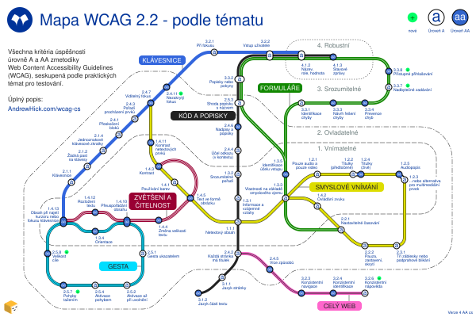

This is an extract of the Czech WCAG map page published on AndrewHick.com/wcag-cs. Copy and paste the following code into the main page HTML files.
↓ START OF CODE TO COPY ↓
Mapa WCAG 2.2 - podle tématu
V tomto diagramu najdete všechna kritéria úspěšnosti metodiky Web Content Accessibility Guidelines (WCAG) ve verzi 2.2, přehledně rozdělená podle témat. Zahrnuje úrovně A a AA.
Ukazuje praktické souvislosti mezi jednotlivými kritérii, které nemusí být z názvů pravidel na první pohled patrné. Například všechna kritéria, která lze otestovat pomocí klávesnice, najdete na jedné lince. Struktura vychází především z rozhodovacího stromu WCAG (WCAG decision tree), který podrobněji popisuje, jak jednotlivá pravidla otestovat.
Mapa

{kind=link}
Popis
Mapa připomíná plánek metra a zobrazuje 55 pravidel jako jednotlivé stanice na 7 linkách.
Symbol u každé stanice znázorňuje, zda se jedná o kritérium úrovně A nebo AA. Čtyři principy WCAG jsou zobrazeny jako zóny vybíhající ze středu směrem ven, oddělené tenkými šedými linkami:
- 1.x.x – Vnímatelné (tyto stanice jsou nejblíže středu)
- 2.x.x – Ovladatelné
- 3.x.x – Srozumitelné
- 4.x.x – Robustní (tyto stanice jsou nejdále od středu)
Podrobný popis každé linky najdete v následujících částech. Názvy některých kritérií jsou mírně zjednodušeny.
Klávesnice
Tato kritéria zajišťují, aby ovládání pomocí klávesnice bylo předvídatelné a aby byl fokus (zaměření kurzoru) vždy jasně viditelný.
Linka je vyznačena plnou modrou čárou a vede ze západu na sever.
| Číslo | Kritérium úspěšnosti | Úroveň | Přestupy |
|---|---|---|---|
| 1.4.13 | Obsah při najetí kurzoru nebo fokusu klávesnice | AA | |
| 2.1.1 | Klávesnice | A | žádné |
| 2.1.2 | Žádná past na klávesy | A | žádné |
| 2.1.4 | Jednoznakové klávesové zkratky | A | žádné |
| 2.4.1 | Přeskočení bloků | A | žádné |
| 2.4.3 | Pořadí procházení prvků | A | žádné |
| 2.4.7 | Viditelný fokus | AA | |
| 2.4.11 | Nezakrytý fokus nové | AA | žádné |
| 3.2.1 | Při fokusu | A | žádné |
| 3.2.2 | Vstup uživatele | A | |
| 4.1.2 | Název, role, hodnota | A |
Zvětšení a čitelnost
Tato kritéria zajišťují, aby text byl:
- čitelný i při zvětšení nebo změně prokladu a řádkování,
- ve formátu skutečného textu, nikoliv jen jako součást obrázku [a aby byl přizpůsobitelný],
- ovladatelný i v případě, že se zobrazí až při najetí myší (hover) nebo zaměření (fokus)
Linka je tmavě červená se dvěma vnitřními bílými linkami a vede ze západní části středu směrem na západ.
| Číslo | Kritérium úspěšnosti | Úroveň | Přestupy |
|---|---|---|---|
| 1.4.3 | Kontrast | AA | |
| 1.4.5 | Text ve formě obrázku | AA | |
| 1.4.4 | Změna velikosti textu | AA | žádné |
| 1.4.10 | Přeuspořádání obsahu | AA | |
| 1.4.12 | Rozložení textu | AA | žádné |
| 1.4.13 | Obsah při najetí kurzoru nebo fokusu klávesnice | AA |
Smyslové vnímání
Tato kritéria zajišťují, aby obsah nebyl podmíněn zapojením konkrétních smyslů, a to:
- zajištěním dostatečného kontrastu,
- tím, že nespoléhá výhradně na zrak, barvy, sluch nebo načasování,
- omezením rušivých zvukových a vizuálních prvků.
Linka je žlutá s černým olemováním. Vede převážně ze severozápadu na východ a od stanice Smyslové vjemy dále tvoří smyčku.
| Číslo | Kritérium úspěšnosti | Úroveň | Přestupy |
|---|---|---|---|
| 2.4.7 | Viditelný fokus | AA | |
| 1.4.11 | Kontrast netextových prvků | AA | žádné |
| 1.4.3 | Kontrast | AA | |
| 1.4.1 | Používání barev | A | žádné |
| 1.4.5 | Text ve formě obrázku | AA | |
| 1.1.1 | Netextový obsah | A | |
| 1.3.3 | Vlastnosti na základě smyslového vjemu | A | |
| 1.2.1 | Pouze audio a pouze video | A | žádné |
| 1.2.2 | Titulky (předtočené) | A | žádné |
| 1.2.4 | Titulky (živě) | AA | žádné |
| 1.2.5 | Audiopopis | AA | žádné |
| 1.2.3 | Audiopopis nebo alternativa pro multimediální prvek | A | žádné |
| 1.4.2 | Ovládání zvuku | A | žádné |
| 2.2.1 | Nastavitelné časování | A | |
| 2.2.2 | Pauza, zastavení, skrytí | A | žádné |
| 2.3.1 | Tři záblesky nebo podprahové blikání | A | žádné |
Kód a popisky
Díky těmto kritériím je obsah srozumitelný pro asistivní technologie, protože:
- kód je v souladu s vizuální podobou prvků,
- prvky mají správně definovány popisky.
Formuláře mají navíc vlastní sadu doplňujících kritérií.
Linka je černá s bílým okrajem. Vede převážně od jihu k severu.
| Číslo | Kritérium úspěšnosti | Úroveň | Přestupy |
|---|---|---|---|
| 3.1.2 | Jazyk části textu | AA | žádné |
| 3.1.1 | Jazyk stránky | A | žádné |
| 2.4.2 | Každá stránka má titulek | A | |
| 1.1.1 | Netextový obsah | A | |
| 1.3.1 | Informace a vzájemné vztahy | A | žádné |
| 1.3.2 | Srozumitelné pořadí | A | žádné |
| 2.4.4 | Účel odkazu (v kontextu) | A | žádné |
| 2.4.6 | Nadpisy a popisky | AA | žádné |
| 2.5.3 | Shoda popisku s názvem | A | |
| 3.3.2 | Popisky nebo pokyny | A | |
| 3.2.2 | Vstup uživatele | A | |
| 4.1.2 | Název, role, hodnota | A | |
| 4.1.3 | Stavové zprávy | AA |
Formuláře
Díky těmto pravidlům jsou formuláře skutečně použitelné, protože:
- nejsou podmíněny časovými limity ani smyslovými pokyny,
- obsahují srozumitelné instrukce a chybové zprávy,
- jsou kompatibilní s asistivními technologiemi,
- umožňují snadné přihlášení a dokončení úkonů.
Linka je zelená s jednou vnitřní bílou linkou a vede převážně z východní části středu směrem na sever. Od stanice Identifikace účelu vstupu tvoří smyčku.
| Číslo | Kritérium úspěšnosti | Úroveň | Přestupy |
|---|---|---|---|
| 2.2.1 | Nastavitelné časování | A | |
| 1.3.3 | Vlastnosti na základě smyslového vjemu | A | |
| 1.3.5 | Identifikace účelu vstupu | AA | žádné |
| 2.5.3 | Shoda popisku s názvem | A | |
| 3.3.2 | Popisky nebo pokyny | A | |
| 3.2.2 | Vstup uživatele | A | |
| 4.1.2 | Název, role, hodnota | A | |
| 4.1.3 | Stavové zprávy | AA | |
| 3.3.1 | Identifikace chyby | A | žádné |
| 3.3.3 | Návrh řešení chyby | AA | žádné |
| 3.3.4 | Prevence chyb | AA | žádné |
| 3.3.7 | Nadbytečné zadávání nové | A | žádné |
| 3.3.8 | Přístupné přihlašování nové | AA | žádné |
Gesta
Díky těmto pravidlům funkce webu spolehlivě fungují, protože:
- nespoléhají na gesta, tažení ani pohyb zařízení,
- fungují na malých obrazovkách v režimu na výšku i na šířku,
- snižují riziko nechtěného spuštění nějaké akce.
Linka je azurová s černým olemováním a černou vnitřní linkou. Na jihozápadě tvoří smyčku.
| Číslo | Kritérium úspěšnosti | Úroveň | Přestupy |
|---|---|---|---|
| 1.4.13 | Obsah při najetí kurzoru nebo fokusu klávesnice | AA | |
| 1.3.4 | Orientace | AA | žádné |
| 1.4.10 | Přeuspořádání obsahu | AA | |
| 2.5.1 | Gesta ukazatelem | A | žádné |
| 2.5.2 | Aktivace až při uvolnění | A | žádné |
| 2.5.4 | Aktivace pohybem | A | žádné |
| 2.5.7 | Pohyby tažením nové | AA | žádné |
| 2.5.8 | Velikost cíle nové | AA | žádné |
Celý web
Tato kritéria se testují napříč celým webem a mají zaručit, že:
- názvy, menu a prvky nápovědy jsou konzistentní,
- stránky mají výstižné titulky,
- existuje více způsobů, jak se dostat ke každé stránce.
Linka růžová se dvěma vnitřními černými čarami. Vede z jihu na jihovýchod.
| Číslo | Kritérium úspěšnosti | Úroveň | Přestupy |
|---|---|---|---|
| 2.4.2 | Každá stránka má titulek | A | |
| 2.4.5 | Více způsobů | AA | žádné |
| 3.2.3 | Konzistentní navigace | AA | žádné |
| 3.2.4 | Konzistentní identifikace | AA | žádné |
| 3.2.6 | Konzistentní nápověda nové | A | žádné |
Jiné pohledy a poděkování
Velmi děkuji Radek Pavlíček za překlad do češtiny!
Další verze a poděkování najdete na stránce AA mapy v angličtině.
Licence
Děkuji za návštěvu! Toto dílo je licencováno pod licencí Creative Commons: CC BY-NC 4.0


Budu rád, když tuto mapu kdokoli využije nebo upraví, prosím však o dodržení těchto podmínek:
- uveďte autora a přidejte odkaz na úplný přístupný popis na AndrewHick.com/wcag-cs;
- mapu sdílejte nebo upravujte s ohledem na přístupnost (například doplňte k obrázkům alternativní texty)
- pro komerční využití mě prosím nejprve kontaktujte
↑ END OF CODE TO COPY ↑